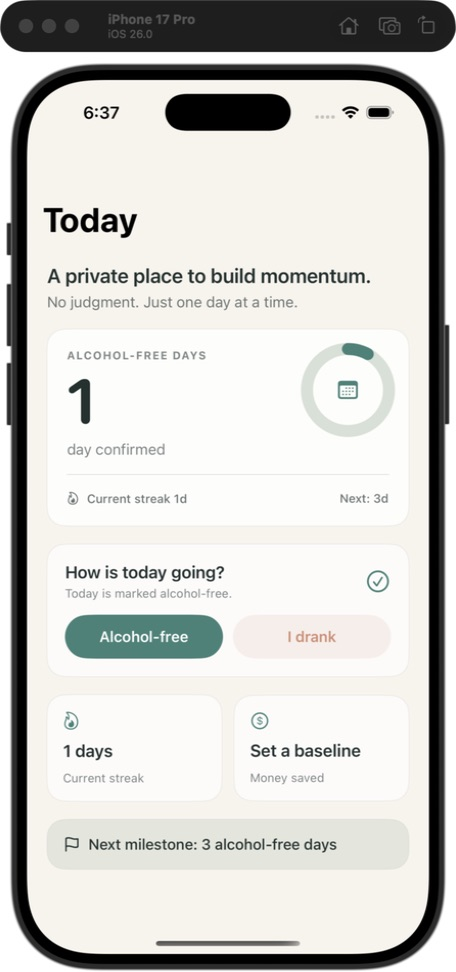
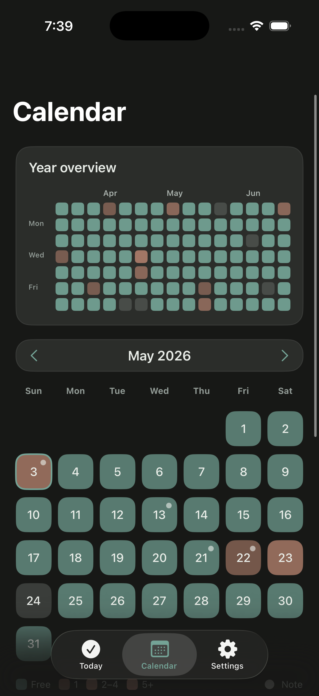
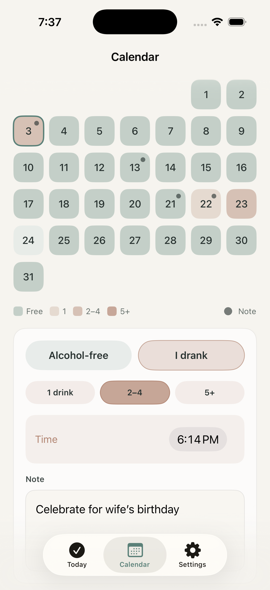

Check in simply
Mark an alcohol-free day or log a broad drink level. Add a private note only when it helps.
Private progress. No pressure.
Track alcohol-free days, notice your patterns, and build momentum in a calm space that stays on your device.
No account. No ads. No public profile.

A tracker, not a judge
No feeds, coaching scripts, or streak-shaming. Just the information that helps you see where you are.
Mark an alcohol-free day or log a broad drink level. Add a private note only when it helps.
Follow total alcohol-free days, time since your last drink, or dry days in the current month.
Use your own typical cost and drinking frequency to estimate money saved on alcohol-free days.


Patterns without punishment
Alcohol-free days, drink levels, and notes sit together in one calm calendar so you can reflect without labeling a day as failure.
Privacy by design
Alcohol Free Tracker works without an account or network connection. The current app does not send your profile, check-ins, notes, or drinking history to the developer.
Designed to make privacy the default, not another setting to find.
Coming to the App Store
Alcohol Free Tracker is preparing for its first iPhone and iPad release. Contact support if you would like a release update.
Ask for an update